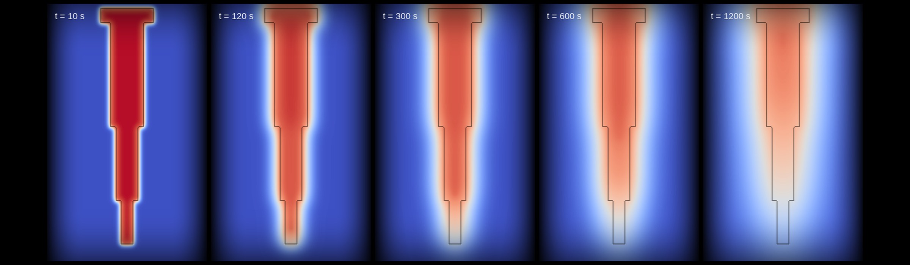

Blogs
Notes from the lab.
What we are learning while building physics foundation models for casting: datasets, simulations, benchmarks and the honest gaps in between.
01 — Writing
Technical blogs

Why foundries still get it right on the third pour, and what a foundation model could change
Defects, trial and error and remelting: the problem as we see it, what a casting foundation model should recommend, and the gap we cannot close without real castings.
Read post →
Does a neural network need to see the neighbours? MLP vs 3D U-Net on casting temperatures
Same data, same geometry-level split. On the unseen stepped block, giving the model spatial context drops the mean error from 80.7 K to 1.9 K.
Read post →
How we built LM6-CastBench: 450 sand-casting simulations, one pipeline
Parametric CAD, Latin Hypercube Sampling, independent meshing and Elmer FEM: how we built an open thermal dataset that never separates a temperature field from its geometry.
Read post →
02 — Videos